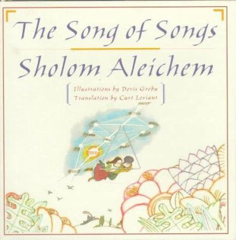

I Begat a Son, Isaac
Have you heard of Sholom Aleichem's Song of Songs? I suppose not, not many people have. Well my Buzia is not really Buzia, she's Esther, but she is Buzia. I suppose that makes me Shimek. Confused? That's all right. I must save Buzia. Do you know of the Polish boy who entered the ghetto to protect his best friend's little sister? He does not need to be here, but he is. I must save Janek. I must save the others in the ghetto. The choices are to sacrifice myself to save the others or to live as the others are killed. A stalemate is the only way to save everyone, but Schoger does not understand sacrifice. He does not understand that I will not save myself at the expense of others.
Checkmate.
"He understood then that there was only one proper move" (Meras 158).
The lives of so many rely on a single game. If I, a prodigy, cannot succeed, who can?
Chess

Return
thriftbooks.com/w/song